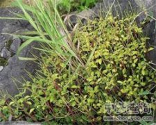

石蝉草

拼音
Shí Chán Cǎo
别名
火伤叶、胡椒草（《广西药植名录》），散血胆、豆瓣七、散血丹、石马菜（《云南中草药选》），豆瓣绿、红豆瓣（《云南思茅中草药选》）。
来源
为胡椒科植物石蝉草的全草。
生境分布
常生于山谷、溪边或林下石缝内。分布云南、广西、广东、福建、台湾等地。
药材特点
一年生肉质草本。茎直立或基部匍匐状，分枝，被短柔毛，高10～30厘米，下部几节常生不定根。叶对生或3～4片轮生，膜质，有腺点，菱状椭圆形或倒卵形，长2～4厘米，宽1～2厘米，顶端圆或钝，基部阔楔形或圆形，全缘，两面被短柔毛；叶柄长0.5～1.5厘米，被毛。穗状花序腋生或顶生，单条或2～3条聚生，长2～10厘米，无毛；花小，两性，疏生于肉质花序轴上；总花梗被毛，长0.5～1.5厘米；苞片近圆形，有腺点，盾状；雄蕊2枚，有短花丝；子房倒卵形，柱头近顶生，被毛。浆果球形，直径不足0.5毫米，顶端稍尖。花期4～7月及10～12月。
性状
性状鉴别 茎肉质，圆柱形，弯曲，多分枝，长短不一；表面紫黑色，有纵皱纹及细小皮孔，具短茸毛，节上有时右见不定根。叶对生或3-4叶轮生，具短柄；叶片多卷缩，展平后呈菱状椭圆形或倒卵形，全缘，长1-3cm，宽0.5-1.5cm，先端钝圆，膜质，有腺点，叶脉5条，两面有细茸毛。气微，味淡。
性味
辛，凉。 ①《云南中草药选》："辛淡，平。" ②《云南思茅中草药选》："性凉，味淡。"
功能主治
①《云南中草药选》："祛瘀散结，抗癌。治胃癌，食道癌，肝癌，乳腺癌，肺癌。" ②《云南思茅中草药选》："清热解毒，消肿散瘀，止痛利水。治跌打损伤，烫烧伤，痈肿疮疖，肾炎水肿，肺结核，哮喘，气管支气管炎，肺热咳嗽。"
用法用量
内服：煎汤，1～2两；或浸酒。外用：捣敷。
化学成分
无化学成分数据
药理作用
1：无药理作用数据
摘录
《中药大辞典》